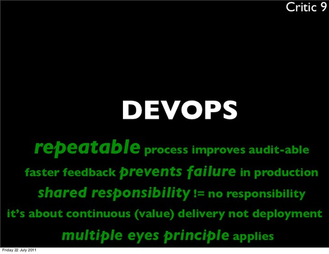

What is DevOps
Will Thames
11 February 2016
DevOps
DevOps is Developers and Operations working together for the good of the business
DevOps
- A bit like Agile in that it extends the Definition of Done
 pre-DevOps
pre-DevOps
This is all obvious, right?
- It definitely wasn't to a lot of us at the time
- Misaligned incentives held us back
What things are DevOps
CAMS:
- Culture
- Automation
- Measurement
- Sharing
What have we done
- Completely open automation
- Developers contributing to automation
- Repeatable provisioning and deployment
- Coding standards for automation
Where would we like to go
- Automated testing of automation (turtles all the way down)
- Developers pushing to production ( == Developers oncall)
- Complete self-service
Further insight
Patrick Debois, 2010, DevOps Down Under [Video] [Slides]
What is DevOps